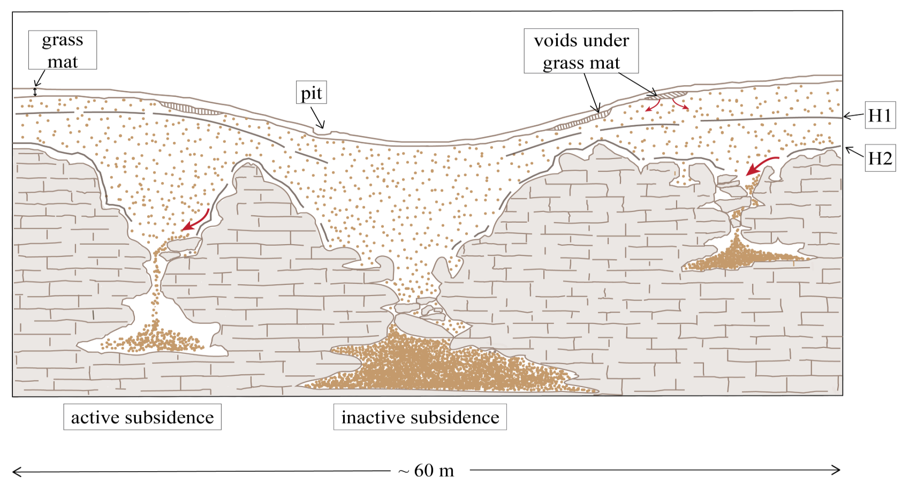
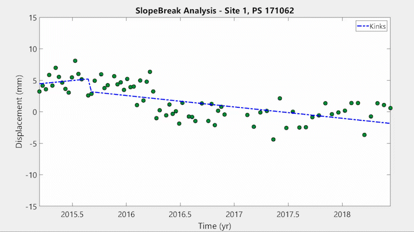

Ph.D. Research Pojects
Sinkholes in Florida are not formed from the typical conical subsurface void.
A study was conducted in west-central Florida that combined multiple remote sensing techniques with Near-surface Geophysics to monitor a growing sinkhole in Hernando County Florida.
This Work has been published in Geomorphology: Robinson et al., 2021

This figure was created by me using Adobe Illustrator, It shows the complex subsurface processes and structures that result in sinkhole formation in west-central Florida
Slope changes related to sinkhole propagation are detectable in Persistent Scatterer Time Series.
A slope break model was developed to find statistical kinks in PS time series datasets acquired in west-central Florida.

What's Causing Subsidence in the Tampa Bay Region?